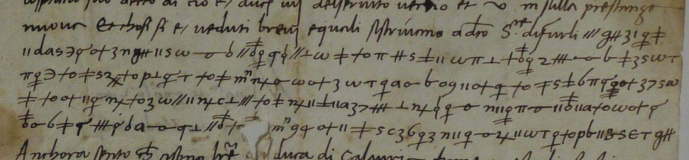
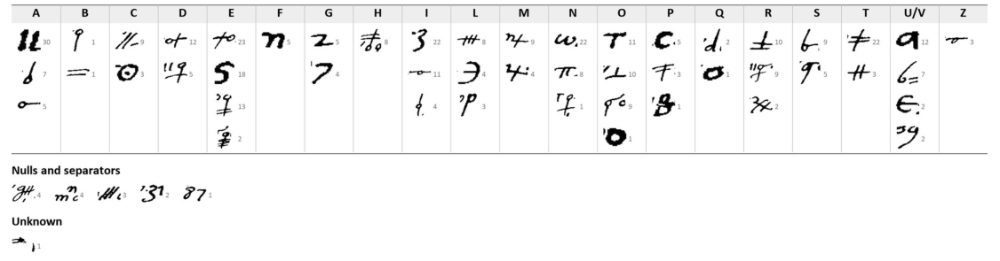

At a glanceKey recovered from the ciphertext alone, partial · 357 of 381 plaintext letters (93.7%)
- The letter
- Donato Acciaiuoli, Florentine orator in Rome, to Lorenzo de’ Medici, “ex Urbe die 13 junii 1478”: a clear letter with two cipher blocks on its second page.
- Where
- Archivio di Stato di Siena, Concistoro 2308, fasc. 2, no. 11; DECODE R4800, catalogued “1500–1599” with no sender or receiver.
- The cipher
- Homophonic substitution on 57 signs: three to five signs for each vowel, one to three for the consonants, a few nulls, and the numerals 80 and 7 written as dotted numbers. No word division, no nomenclator.
- How it was deciphered
- George Lasry with CTTS and Claude, 15–17 October 2026: transcription by Claude, key recovered by Claude by crib analysis. No key or decipherment of this letter is known.
- What it says
- The lord of Faenza, like the lord of Forlì, is to stay in his lands and send two squadrons into the field; Gianfrancesco Gonzaga will come into Lorenzo’s service with at least 80 men-at-arms for 7,000 ducats.
- Still open
- One sign lost in a hole and six doubtful words.
- Credit
- George Lasry: transcription, key, reading, translation and context (report of 17 October 2026). The project transcribed the letter in September 2026 but did not break it.
The Sienese cipher file Concistoro 2308 holds pieces in many different keys; this one is a Florentine cipher, with its own page. The other pieces of the file are listed on the collection’s page.
01The letter and its key
The letter is in clear except for two blocks on its second page: block A, 206 symbols in five lines, continues a clear sentence about the briefs written to the lord of Forlì; block B, 187 symbols in five lines, follows the clear words et della legha and ends in the clear Vale. The signature reads “Donatus Acc. or.”; the address on the first page, “Mag.co ac gen.so Viro Laurentio Medici tamquam fratri hon.do, Florentie”.


02What it says
George Lasry’s reading of the two blocks, quoted from his report (nulls omitted; 80 and 7 are numerals written in the cipher; ? marks a doubtful reading):
… et a quelo di Faenza, che si contenteranno, et egli stieno nele tere loro et mandino dua squadre per uno e di gente d’arme in campo. Et maraviglomi di? Faenza, havendo hauto lo aviso che ? ?v m date piu di fa, di ma non? el sapevo. Del signor Giovan Francescho da? Gonzagha si e spicato dile altre pratiche et volentieri vera a s?ervigi vostri con 80 huomini d’arme il meno, et no? fanti; domanda 7 milia ducati per queste genti et mille per la persona sua; et Bacio? viene et diravene a boca.
“… and to him of Faenza, that they will be content and that they should stay in their own lands and each send two squadrons of men-at-arms into the field. And I marvel at(?) Faenza, having had the news that ? … were given several days ago, and I did not(?) know it. As for Signor Giovan Francesco da(?) Gonzaga: he has freed himself from his other negotiations and will gladly come into your service with at least 80 men-at-arms and no(?) foot soldiers; he asks 7,000 ducats for these troops and 1,000 for his own person; and Baccio(?) is coming and will tell you of it by word of mouth.” (his translation)
Context. The letter was written seven weeks after the Pazzi conspiracy of 26 April 1478. On 1 June Sixtus IV excommunicated Lorenzo, and with Ferrante of Naples and Siena went to war on Florence; Florence pressed its Romagnol clients, Pino III Ordelaffi of Forlì and Galeotto Manfredi of Faenza, and hired condottieri. George Lasry takes block B’s Gonzaga to be Gianfrancesco Gonzaga (1446–1496), third son of Marquis Ludovico III of Mantua, who died on 12 June 1478, the day before this letter. Acciaiuoli was next sent to Louis XI and died in Milan on the way in August 1478. How a letter to Lorenzo came into the Sienese file is unexplained; interception of the courier, Siena being Florence’s enemy, is the obvious hypothesis.
03How it was deciphered
George Lasry, with CTTS and Claude, 15–17 October 2026: Claude transcribed the 393 symbols and recovered the key by crib analysis; George Lasry gives the result as “about 90 % certain”. Counted here on his reading, 357 of the 381 plaintext letters and numerals of the cipher passages stand in words without a query mark (93.7%). He marks two probable encipherer’s slips (ri where di is expected, e a for da).
The project transcribed the letter on 24 September 2026 (409 tokens under 44 sign names) and failed to break it: homophonic annealing did not converge, the Sienese key of Antonio Bichi (Rome 1478, DECODE R4752) did not fit, and the index of Florentine keys has no key for Acciaiuoli. George Lasry’s key has 57 signs: the project’s transcription had merged look-alike signs, the obstacle he names for the whole file.
04What remains
- One sign lost in a hole in block A (“? ?v m date piu di fa”).
- Six doubtful words, graded M: di?, non?, da?, s?ervigi, no?, Bacio?.
- Whether the Gonzaga condotta was concluded is unchecked in the published letters of Lorenzo (Rubinstein, vol. III).
05Sources
- Archivio di Stato di Siena, Concistoro 2308 fasc. 2 no. 11: DECODE R4800.
- George Lasry, “The cipher documents of Concistoro 2308, fasc. 2”, report sent to Daniel Bourdeau, 17 October 2026, section E (decipherment, key, translation, context).
- Lettere di Lorenzo de’ Medici, vol. III (1478–1479), ed. N. Rubinstein (Florence 1977); L. Martines, April Blood (Oxford 2003); M. Mallett, Mercenaries and Their Masters (London 1974); as cited by George Lasry.
Manuscript rights: Archivio di Stato di Siena.
George Lasry’s report section, the project’s transcription and the notes: targets/siena11/.